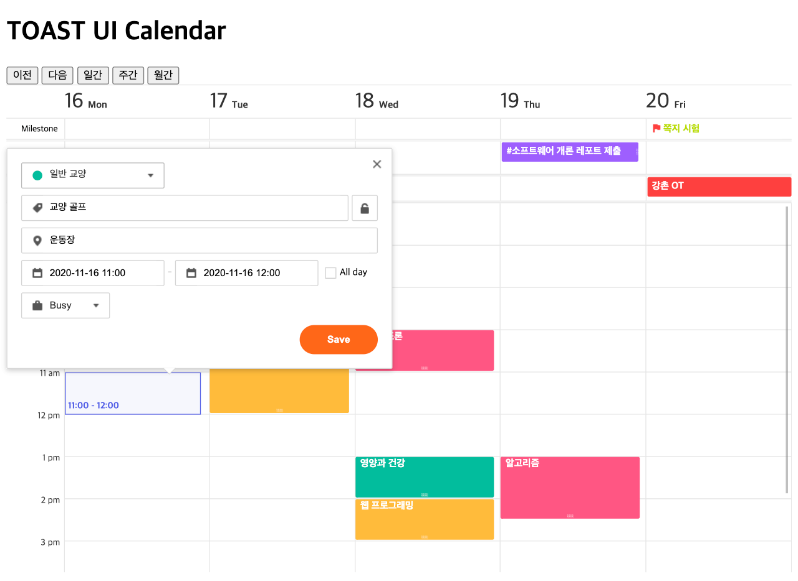
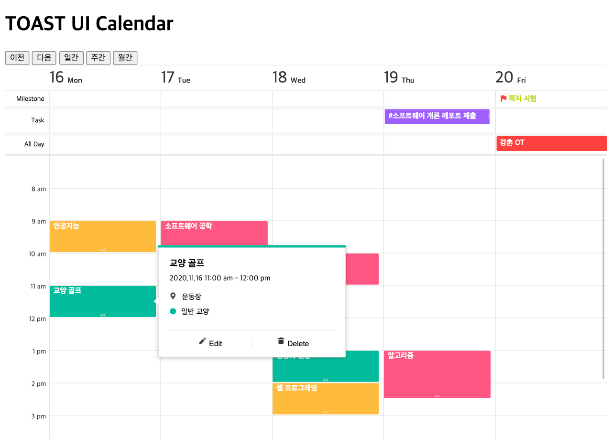
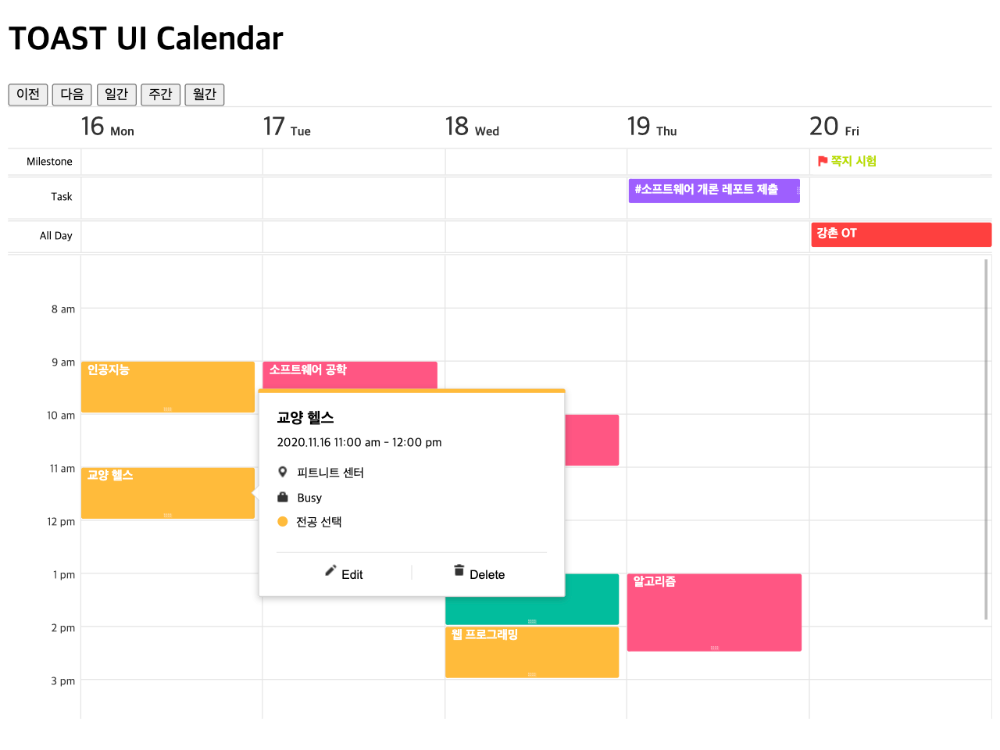

6. 이벤트 핸들러 다루기¶
TOAST UI Calendar는 사용자가 쉽게 일정을 생성/편집/삭제할 수 있도록 팝업 UI를 기본으로 제공합니다.
이벤트는 tui-code-snippet 의 CustomEvents 를 믹스인하여 사용합니다. 사용자는 간단히 .on() 함수를 사용하면 됩니다.
6.1. 기본으로 제공하는 팝업 UI 사용하기¶
캘린더 인스턴스 생성 시 작성하는 옵션에 팝업 UI를 사용하는 옵션을 추가해 주세요.
- 기본 팝업 UI 설정 옵션
useCreationPopup:true로 설정하면 일정 생성 팝업이 제공됩니다.useDetailPopup:true로 설정하면 일정 상세 보기 팝업이 제공됩니다.
defaultView 를 'week' 으로 변경하고 useCreationPopup, useCreationPopup 속성을 추가해 주세요.
...
const options = {
defaultView: 'week',
...
useCreationPopup: true,
useDetailPopup: true
};
6.2. 일정 생성하기¶
팝업에서 입력받은 일정 정보를 저장하기 위해 이벤트 핸들러를 등록해 봅시다.
- 이벤트 이름 -
beforeCreateSchedule 팝업에서 [Save] 버튼을 클릭하면 입력된 일정 정보를 넘겨주는 이벤트 훅
콜백 함수 내에서 필요에 따라 서버에 일정을 저장할 수 있으며,
createSchedules()를 호출하여 화면에 일정을 표시
- 이벤트 이름 -
...
calendar.on('beforeCreateSchedule', scheduleData => {
const schedule = {
calendarId: scheduleData.calendarId,
id: String(Math.random() * 100000000000000000),
title: scheduleData.title,
isAllDay: scheduleData.isAllDay,
start: scheduleData.start,
end: scheduleData.end,
category: scheduleData.isAllDay ? 'allday' : 'time',
location: scheduleData.location // 장소 정보도 입력할 수 있네요!
};
calendar.createSchedules([schedule]);
alert('일정 생성 완료');
});
캘린더의 빈 곳에 마우스를 클릭하거나 드래깅하면 새 일정을 작성할 수 있는 팝업이 나타납니다.
팝업의 항목을 입력 후 [Save] 버튼을 클릭하면 만들어진 새 일정이 표시되며 일정을 클릭하면 입력한 내용도 잘 보입니다.
6.3. 일정 편집하기¶
일정을 클릭하고 [Edit] 버튼을 누르면 일정 편집 팝업이 나타납니다. 편집된 일정을 저장하기 위한 이벤트 핸들러를 등록해 봅시다.
- 이벤트 이름 -
beforeUpdateSchedule 편집 팝업에서 편집 후 [Save] 버튼을 클릭했을 때, 혹은 일정을 마우스로 드래그하여 날짜를 변경하는 경우 변경된 일정 정보를 넘겨주는 이벤트 훅
필요한 경우 서버에 일정을 갱신하는 로직을 처리할 수 있으며,
updateSchedule()함수를 호출하여 화면에 보이는 일정을 갱신
- 이벤트 이름 -
...
calendar.on('beforeUpdateSchedule', event => {
const {schedule, changes} = event;
calendar.updateSchedule(schedule.id, schedule.calendarId, changes);
});
방금 새로 만들었던 일정을 클릭하고 [Edit] 버튼을 누른다음 내용을 변경하여 [Update] 버튼을 누릅니다.
일정이 정상적으로 변경되었습니다.
6.4. 일정 삭제하기¶
일정을 삭제하기 위한 이벤트 핸들러를 등록해 보겠습니다.
- 이벤트 이름 -
beforeDeleteSchedule 일정을 클릭하고 [Delete] 버튼을 누르면 발생하는 이벤트 훅
필요한 경우 서버에 일정을 삭제하는 로직을 추가하고,
deleteSchedule()을 함수를 호출하여 화면에서 일정을 삭제
- 이벤트 이름 -
...
calendar.on('beforeDeleteSchedule', scheduleData => {
const {schedule} = scheduleData;
calendar.deleteSchedule(schedule.id, schedule.calendarId);
});
짝짝짝! 축하합니다. 이제 여러분의 서비스에 바로 TOAST UI 캘린더를 적용해 보세요. :)